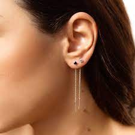
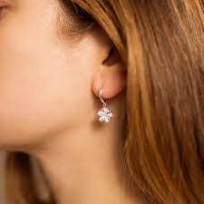
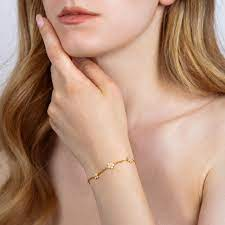
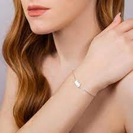
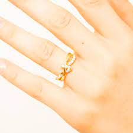
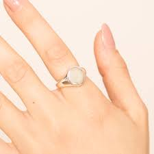
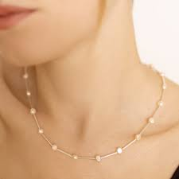
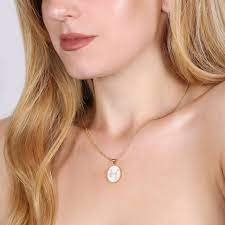

Lista prodotti...
- Orecchini
- Bracciali
- Anelli
- Collane
Orecchini:
Gli orecchini di Amabile nascono dall'esigenza di ogni donna di essere elegante in ogni momento e sono adatti ad ogni occasione. Sono gioielli semplici, eleganti, ma anche moderni, che donano luce al volto. Sono tutti disegnati per essere indossati singolarmente o abbinati tra di loro secondo il personale gusto di chi li indossa.
Orecchini sul sito di Amabile

Bracciali:
I bracciali accompagneranno ogni donna con eleganza e luminosità in ogni circostanza. Gli zirconi che adornano i bracciali catturano delicatamente la luce sprigionando una luminosità incantevole e una grazia irresistibile.
Bracciali sul sito di Amabile

Anelli:
Gli anelli sono gioielli delicati ed eleganti, che danno un tocco di classe al proprio look. Ci sono modelli colorati, altri più semplici, dorati o argentati, altri ispirati al tema dell'amore e dell'amicizia. Essi sono adatti a qualsiasi occasione.
Anelli sul sito di Amabile

Collane:
Le collane sono gioielli versatili, che riescono a farsi notare nella propria delicatezza. Esse sono preziose e raffinate, adatte a tutte le occasioni, da quelle più formali a quelle più informali.
Collane sul sito di Amabile
